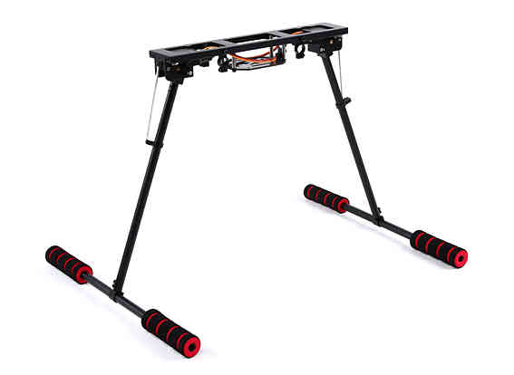

Landing Gear/ Retractable Camera Mount¶
Copter and Plane support retractable Landing Gear / Camera Mounts activated by a servo mechanism(like these sold by Hobby King for copters). The gear/ mount can be manually retracted or deployed with an auxiliary switch. The gear will also automatically deploy during landing and/or retract during takeoff. The output which controls the servo for landing gear/ camera mount is set by the SERVOx_FUNCTION =29.
During startup, the status of the landing gear/ camera mount is determined by the LGR_STARTUP parameter. Starting either in deployed or retracted state can be selected, or to wait for pilot input, which prevents PWM signals from being active on the outputs whose SERVOx_FUNCTION = 29 (Landing Gear). This prevents the current position of those outputs from changing until the pilot or automatic operation commands a change.
In firmware versions before Plane 4.0.6 and Copter 4.0.4, retraction and deployment happen automatically in AUTO mode takeoffs, AUTO mode landings, and final land or glide phase of RTL landings, for both Plane and Copter. And happen when changing to LAND mode for Copter. For later firmware versions, the LGR_OPTIONS bitmask can selectively enable or disable these operations. If bit 0 is set, the automatic retractions are enabled, and if bit 1 is set, then automatic deployment occurs. Either or both bits can be set. Default is both bits set, enabling automatic deployment and retraction. The manual switch, if programmed, can change the deploy/retract state of the gear at any time.
In addition, the landing gear/ camera mount can automatically deploy or retract based on altitude, using the LGR_DEPLOY_ALT for automatic deployment below this altitude, and automatic retraction if above the LGR_RETRACT_ALT. If these are set to 0, then these functions are not active.
{kind=link}
Connecting to the Autopilot¶
Most retractable landing gear will require just a single PWM cable to be connected to one of the autopilot outputs, selected using the SERVOx_FUNCTION set to 29 for that output. If the retractable landing gear operation appears to be flipped (retracted when it should be deployed) you can change this using the SERVOx_REVERSED parameter. Reversed operation seems to be necessary with Tarot retractable landing gear legs without the Tarot control box.
Setup through the Mission Planner¶
Use the Mission Planner’s Full Parameter List (or equivalent) to set the above parameters and/or set an RC channel to be a manual control using the RCx_OPTION = 29 for that channel. When the PWM for the channel is < 1200us, the gear will be deployed, > 1800us it will be retracted, other values will not change the gear’s state. After the RC channel requests a deploy or retract, an automatic function can override the manual control, until the channel is moved to another state and/or returned.
Other Parameters¶
There are additional landing gear/ camera mount features in development for future releases and therefore other LGR_ parameters are listed not covered in this topic, but they are only used for logging purposes at this time and do not affect operation.
[copywiki destination=”plane,copter”]